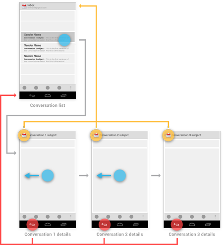

ActionBar 使用指南
因为在项目中需要使用 ActionBar 进行一些自定义操作以提高整体的视觉效果，所以研究了一下 ActionBar 的用法，在这里记录一下。
隐藏 ActionBar
比较简单的方式就是换主题，在 Android 5 中就是在对应的 xml 文件里修改 android:theme 字段，或者也可以直接在 Activity 中用以下代码来隐藏：
ActionBar actionBar = getActionBar();
actionBar.hide();
修改图标和标题
这一部分的操作都需要在 AndroidManifest.xml 中进行，而对于标题的绑定一般来说是在 strings.xml 里进行统一管理
<activity
android:name=".ui.MainActivity"
android:label="@string/title_activity_main" >
</activity>
修改标题，就是修改 label 属性，需要添加图标的话，就是添加一个 android:logo 字段即可
添加按钮
ActionBar还可以根据应用程序当前的功能来提供与其相关的Action按钮，这些按钮都会以图标或文字的形式直接显示在ActionBar上。当然，如果按钮过多，ActionBar上显示不完，多出的一些按钮可以隐藏在overflow里面（最右边的三个点就是overflow按钮），点击一下overflow按钮就可以看到全部的Action按钮了。
当Activity启动的时候，系统会调用Activity的 onCreateOptionsMenu()方法来取出所有的Action按钮，我们只需要在这个方法中去加载一个menu资源，并把所有的Action按钮都定义在资源文件里面就可以了。像下面这样
<menu xmlns:android="http://schemas.android.com/apk/res/android"
xmlns:app="http://schemas.android.com/apk/res-auto"
xmlns:tools="http://schemas.android.com/tools"
tools:context="lgm.cmu.spotagram.ui.MainActivity">
<item android:id="@+id/action_search"
android:title="Search"
android:icon="@drawable/ic_check"
app:showAsAction="always" />
<item android:id="@+id/action_nearby"
android:title="Near By"
android:logo="@drawable/ic_cast_dark"
app:showAsAction="always" />
<item android:id="@+id/action_settings"
android:title="Settings"
android:orderInCategory="100"
app:showAsAction="never" />
</menu>
这里主要注意一下 showAsAction 属性即可：always 表示永远显示在 ActionBar 中，如果屏幕空间不够则无法显示，ifRoom 表示屏幕空间够的情况下显示在 ActionBar 中，不够的话就显示在 overflow 中，never 则表示永远显示在 overflow 中
然后重写对应 Activity 的 onCreateOpitonsMenu() 方法
@Override
public boolean onCreateOptionsMenu(Menu menu){
MenuInflater inflater = getMenuInflater();
inflater.inflate(R.menu.menu_main, menu);
return super.onCreateOptionsMenu(menu);
}
是显示图标还是文字这个大家可以根据具体的需求来做，但是给每个 item 一个 title 属性是比较好的习惯，因为：
- 当 ActionBar 中的剩余空间不足的时候，如果 Action 按钮指定的 showAsAction 属性是 ifRoom 的话，该 Action 按钮就会出现在 overflow 当中，此时就只有 title 能够显示了。
- 如果 Action 按钮在 ActionBar 中显示，用户可能通过长按该 Action 按钮的方式来查看到 title 的内容。
给按钮添加点击事件
当用户点击 Action 按钮的时候，系统会调用 Activity 的 onOptionsItemSelected() 方法，通过方法传入的 MenuItem 参数，我们可以调用它的 getItemId() 方法和 menu 资源中的 id 进行比较，从而辨别出用户点击的是哪一个 Action 按钮
@Override
public boolean onOptionsItemSelected(MenuItem item) {
Intent intent;
switch (item.getItemId()){
case R.id.action_search:
Toast.makeText(this, "Search", Toast.LENGTH_SHORT).show();
return true;
case R.id.action_nearby:
intent = new Intent(MainActivity.this, NearByActivity.class);
startActivity(intent);
return true;
case R.id.action_settings:
intent = new Intent(MainActivity.this, SettingsActivity.class);
startActivity(intent);
return true;
case R.id.action_aboutme:
intent = new Intent(MainActivity.this, AboutMeActivity.class);
startActivity(intent);
return true;
default:
return super.onOptionsItemSelected(item);
}
}
通过 ActionBar 进行导航
除了通过 back 按钮，同样可以在 ActionBar 上实现导航，只需要调用 setDisplayHomeAsUpEnabled() 方法启用即可：
@Override
protected void onCreate(Bundle savedInstanceState) {
super.onCreate(savedInstanceState);
setContentView(R.layout.activity_near_by);
// 重点是这行
getSupportActionBar().setDisplayHomeAsUpEnabled(true);
// 以下是其他代码
initComponments();
initViews();
initListeners();
}
这样一来就会出现一个向左的箭头，我们给它加上点击事件，注意这里一定要是 android.R.id.home 才可以：
@Override
public boolean onOptionsItemSelected(MenuItem item) {
switch (item.getItemId()){
case android.R.id.home:
finish();
return true;
default:
return super.onOptionsItemSelected(item);
}
}
但这样的用法实际上和 back 键没啥区别，不过其设计的初衷是支持层次调用的，比如说：

上图中的 Conversation List 是收件箱的主界面，现在我们点击第一封邮件会进入到Conversation1 details 界面，然后点击下一封邮件会进入到 Conversation 2 details 界面，再点击下一封邮箱会进入到 Conversation3 details 界面。好的，这个时候如果我们按下 Back 键，应该会回到 Conversation 2 details 界面，再按一次 Back 键应该回到 Conversation1 details 界面，再按一次 Back 键才会回到 Conversation List。而 ActionBar 导航则不应该表现出这种行为，无论我们当前在哪一个 Conversation details 界面，点击一下导航按钮都应该回到 Conversation List 界面才对。
实现标准的ActionBar导航功能只需三步走。
第一步我们已经实现了，就是调用setDisplayHomeAsUpEnabled()方法，并传入true。
第二步需要在AndroidManifest.xml中配置父Activity，如下所示：
<activity
android:name="com.example.actionbartest.MainActivity"
android:logo="@drawable/weather" >
<meta-data
android:name="android.support.PARENT_ACTIVITY"
android:value="com.example.actionbartest.LaunchActivity" />
</activity>
可以看到，这里通过meta-data标签指定了 MainActivity 的父 Activity 是LaunchActivity，在 Android 4.1 版本之后，也可以直接使用android:parentActivityName 这个属性来进行指定，如下所示：
<activity
android:name="com.example.actionbartest.MainActivity"
android:logo="@drawable/weather"
android:parentActivityName="com.example.actionbartest.LaunchActivity" >
</activity>
第三步则需要对android.R.id.home这个事件进行一些特殊处理，如下所示：
@Override
public boolean onOptionsItemSelected(MenuItem item) {
switch (item.getItemId()) {
case android.R.id.home:
Intent upIntent = NavUtils.getParentActivityIntent(this);
if (NavUtils.shouldUpRecreateTask(this, upIntent)) {
TaskStackBuilder.create(this)
.addNextIntentWithParentStack(upIntent)
.startActivities();
} else {
upIntent.addFlags(Intent.FLAG_ACTIVITY_CLEAR_TOP);
NavUtils.navigateUpTo(this, upIntent);
}
return true;
......
}
}
其中，调用NavUtils.getParentActivityIntent()方法可以获取到跳转至父Activity的Intent，然后如果父Activity和当前Activity是在同一个Task中的，则直接调用navigateUpTo()方法进行跳转，如果不是在同一个Task中的，则需要借助TaskStackBuilder来创建一个新的Task。
这样，就按照标准的规范成功实现ActionBar导航的功能了。
添加 Action View
ActionView 是一种可以在 ActionBar 中替换 Action 按钮的控件，它可以允许用户在不切换界面的情况下通过 ActionBar 完成一些较为丰富的操作。比如说，你需要完成一个搜索功能，就可以将 SeachView 这个控件添加到 ActionBar 中。在我的这个应用中，将提供在搜索地点功能。
为了声明一个ActionView，我们可以在 menu 资源中通过 actionViewClass 属性来指定一个控件，例如可以使用如下方式添加 SearchView:
<menu xmlns:android="http://schemas.android.com/apk/res/android"
xmlns:appcompat="http://schemas.android.com/apk/res-auto"
xmlns:app="http://schemas.android.com/apk/res-auto"
xmlns:tools="http://schemas.android.com/tools"
tools:context="lgm.cmu.spotagram.ui.MainActivity">
<item android:id="@+id/action_search"
android:title="Search"
app:showAsAction="ifRoom|collapseActionView"
appcompat:actionViewClass="android.support.v7.widget.SearchView"/>
....
</menu>
注意在 showAsAction 属性中我们还声明了一个 collapseActionView，这个值表示该控件可以被合并成一个 Action 按钮。然后需要在对应的 Activity 中添加方法：
@Override
public boolean onCreateOptionsMenu(Menu menu){
MenuInflater inflater = getMenuInflater();
inflater.inflate(R.menu.menu_main, menu);
MenuItem searchItem = menu.findItem(R.id.action_search);
SearchView searchView = (SearchView) MenuItemCompat.getActionView(searchItem);
searchView.setOnQueryTextListener(new SearchView.OnQueryTextListener() {
@Override
public boolean onQueryTextChange(String queryText) {
Toast.makeText(getApplicationContext(), "onQueryTextChange:" + queryText, Toast.LENGTH_SHORT).show();
return true;
}
@Override
public boolean onQueryTextSubmit(String queryText) {
Toast.makeText(getApplicationContext(), "onQueryTextSubmit:" + queryText, Toast.LENGTH_SHORT).show();
return true;
}
});
MenuItemCompat.OnActionExpandListener expandListener = new OnActionExpandListener() {
@Override
public boolean onMenuItemActionCollapse(MenuItem item) {
Toast.makeText(getApplicationContext(), "onMenuItemActionCollapse", Toast.LENGTH_SHORT).show();
return true;
}
@Override
public boolean onMenuItemActionExpand(MenuItem item) {
Toast.makeText(getApplicationContext(), "onMenuItemActionExpand", Toast.LENGTH_SHORT).show();
return true;
}
};
MenuItemCompat.setOnActionExpandListener(searchItem, expandListener);
return super.onCreateOptionsMenu(menu);
}
这里同时也注册了监听器，所以只要在监听器中进行时间处理即可
Overflow 显示问题
overflow 按钮的显示情况和手机的硬件情况是有关系的，如果手机没有物理 Menu 键的话， overflow 按钮就可以显示，如果有物理 Menu 键的话，overflow 按钮就不会显示出来。
根据这个原理，我们只要默认无论如何都是没有 menu 按键即可。在 ViewConfiguration 这个类中有一个叫做 sHasPermanentMenuKey 的静态变量，系统就是根据这个变量的值来判断手机有没有物理 Menu 键的。当然这是一个内部变量，我们无法直接访问它，但是可以通过反射的方式修改它的值，让它永远为 false 就可以了，代码如下所示
@Override
protected void onCreate(Bundle savedInstanceState) {
......
setOverflowShowingAlways();
}
private void setOverflowShowingAlways() {
try {
ViewConfiguration config = ViewConfiguration.get(this);
Field menuKeyField = ViewConfiguration.class.getDeclaredField("sHasPermanentMenuKey");
menuKeyField.setAccessible(true);
menuKeyField.setBoolean(config, false);
} catch (Exception e) {
e.printStackTrace();
}
}
Overflow 中的选项显示图标
如果你点击一下overflow按钮去查看隐藏的Action按钮，你会发现这部分Action按钮都是只显示文字不显示图标的。这是官方的默认效果，Google 认为隐藏在 overflow 中的 Action 按钮都应该只显示文字。当然，如果你认为这样不够美观，希望在 overflow 中的 Action 按钮也可以显示图标，我们仍然可以想办法来改变这一默认行为。
其实，overflow 中的 Action 按钮应不应该显示图标，是由 MenuBuilder 这个类的 setOptionalIconsVisible 方法来决定的，如果我们在 overflow 被展开的时候给这个方法传入 true，那么里面的每一个 Action 按钮对应的图标就都会显示出来了。调用的方法当然仍然是用反射了，代码如下所示
@Override
public boolean onMenuOpened(int featureId, Menu menu) {
if (featureId == Window.FEATURE_ACTION_BAR && menu != null) {
if (menu.getClass().getSimpleName().equals("MenuBuilder")) {
try {
Method m = menu.getClass().getDeclaredMethod("setOptionalIconsVisible", Boolean.TYPE);
m.setAccessible(true);
m.invoke(menu, true);
} catch (Exception e) {
}
}
}
return super.onMenuOpened(featureId, menu);
}
可以看到，这里我们重写了一个 onMenuOpened() 方法，当 overflow 被展开的时候就会回调这个方法，接着在这个方法的内部通过返回反射的方法将 MenuBuilder 的 setOptionalIconsVisible 变量设置为 true 就可以了。